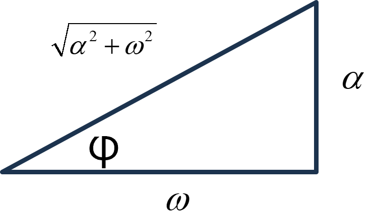
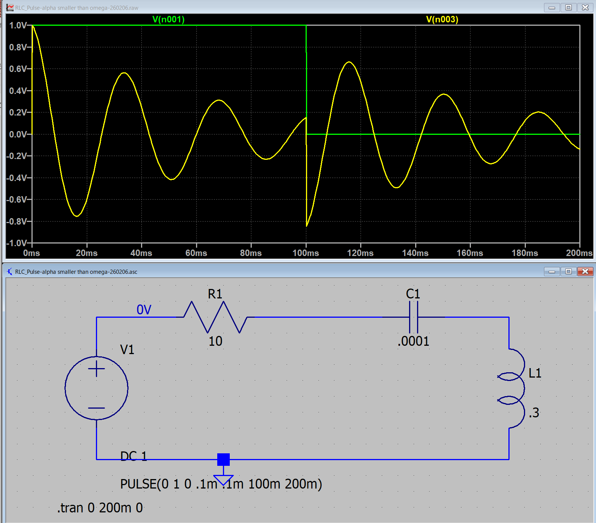
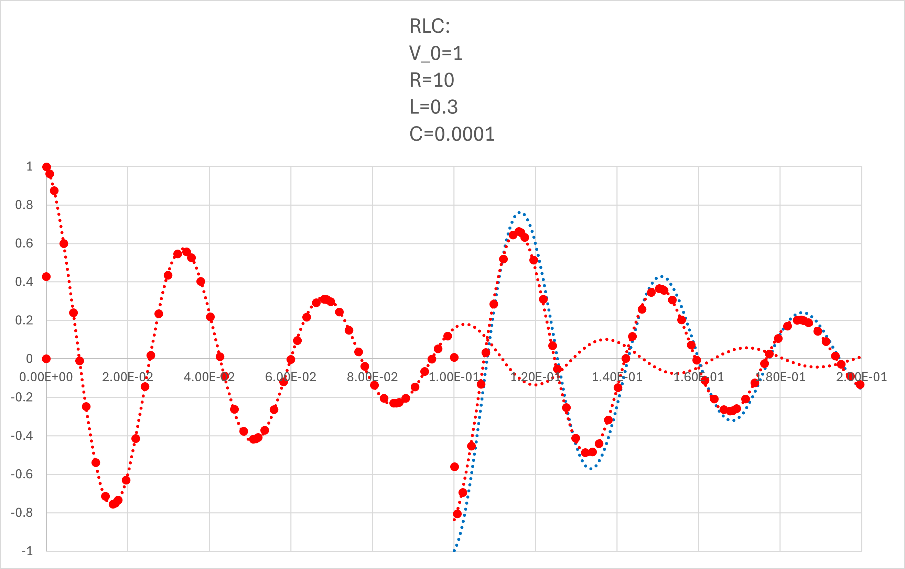

１６ー２．電圧で考えてみる（RLC回路）: α < ω0
まずは，コイルの電圧 ，から
α < ω0
0 < t < t0
\(\Large I_1(t) = \displaystyle \frac{V_0}{ \omega L} \cdot e^{- \alpha t} \cdot sin ( \omega t)\)
t0 < t
\(\Large I_2(t) = \displaystyle \frac{V_0}{ \omega L} \left[ e^{- \alpha t} \cdot sin ( \omega t) - e^{- \alpha (t-t_0)} \cdot sin \ \omega (t-t_0) \right] \)
\(\Large \omega = \sqrt{ \omega_0^2 - \alpha^2}\)
VL ： コイルの電圧
0 < t < t0
\(\Large I_1(t) = \displaystyle \frac{V_0}{ \omega L} \ e^{- \alpha t} \cdot \ sin ( \omega t)\)
\(\Large V_{L1} = \displaystyle L \ \frac{d}{dt} I_1(t) \)
\(\Large = \displaystyle \frac{V_0}{ \omega }\ \{- \alpha \ e^{- \alpha t} \cdot \ sin ( \omega t) + \omega \ e^{- \alpha t} \cdot \ cos ( \omega t)\} \)
\(\Large = \displaystyle \frac{V_0}{ \omega }\ \ e^{- \alpha t} \cdot\{- \alpha \ sin ( \omega t) + \omega \cdot \ cos ( \omega t)\} \)
ここで，
\(\Large cos \ (x +y) = cos \ x \cdot cos \ y - sin \ x \cdot sin \ y \)
から，

\(\Large V_{L1} = \displaystyle \frac{V_0}{ \omega }\ \ e^{- \alpha t} \cdot\{- \alpha \ sin ( \omega t) + \omega \cdot \ cos ( \omega t)\} \)
\(\Large = \displaystyle \frac{V_0}{ \omega }\ \ e^{- \alpha t} \cdot\ \sqrt{ \alpha^2 + \omega^2} \cdot \{ cos \ \varphi \cdot \ cos ( \omega t) -sin \ \varphi \cdot \ sin ( \omega t)\} \)
\(\Large = \displaystyle \frac{V_0}{ \omega }\ \ e^{- \alpha t} \cdot\ \sqrt{ \alpha^2 + \omega^2} \cdot cos \ (\omega t + \varphi) \)
\(\Large \hspace{40pt} ( tan \ \varphi = \frac{\alpha}{\omega} ) \)
t0 < t
\(\Large I_2(t) = \displaystyle \frac{V_0}{ \omega L} \left[ e^{- \alpha t} \cdot sin ( \omega t) - e^{- \alpha (t-t_0)} \cdot sin \ \omega (t-t_0) \right] \)
第一項は上の計算と同じなので，第二項について考えます．
\(\Large e^{- \alpha (t-t_0)} \cdot sin \ \omega (t-t_0) \)
\(\Large T \equiv t-t_0 \)
とすると，
\(\Large dT = dt \)
となるので，
\(\Large \displaystyle \frac{d}{dt} =\frac{d}{dT} \frac{dT}{dt} = \frac{d}{dT}\)
となるので計算は同じとなります．
\(\Large V_{L2} = \displaystyle \frac{V_0}{ \omega }\ \sqrt{ \alpha^2 + \omega^2} \cdot\ \left[ e^{- \alpha t}\cdot cos \ (\omega t + \varphi) - e^{- \alpha (t-t_0)}\cdot cos \ \omega (t-t_0) + \varphi) \right] \)
\(\Large \hspace{40pt} ( tan \ \varphi = \frac{\alpha}{\omega} ) \)
となり，ステップオフの場合は，
第一項 ： 最初のステップオンの際の波形（たとえば，0→1）
第二項 ： t=t0，において，1→0，のように，逆のステップを入力した波形
なので，ステップオフ後，の波形は，
ステップオンの波形の残り ＋ マイナスのステップの波形 の和
となるわけです．
実際に，LTspice，でシミュレートしてみましょう．ここ，と同様に，
V0 : 1 V
R : 10 Ω
L : 0.3 H
C : 0.0001 F
とすると，
\(\Large \displaystyle \omega_0 = \frac{1}{\sqrt{0.3 \times 0.0001} } = 182.57 \ (1/s) \)
\(\Large \displaystyle \alpha \equiv \frac{10}{2 \times 0.3} = 16.67 \ (1/s) \)
となり，α < ω0，の条件となります．
\(\Large \displaystyle \omega = \sqrt{ \omega_0^2 - \alpha^2 } = 181.81 (rad/s) = 28.93 Hz \)
となり，LTspiceでシミュレートすると，

となります．式と当てはめてみると，

と一致することがわかります（全領域で）．
青点線，が右辺第二項，で右辺第一項との和が，シミュレーションと一致することがわかります．
次ページは，コンデンサの電圧を考えてみましょう．